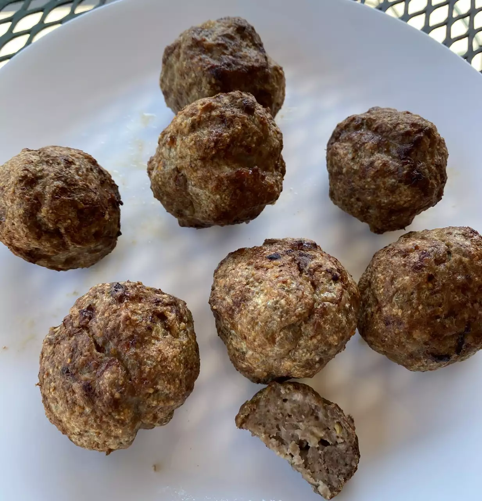

After trying air fryer meatballs, I will never bake them in the oven again. The insides stay nice and tender while the outsides get a slight crisp on them. The best part is that you can make them ahead of time and freeze for later use. I have included those directions in the notes. Dip meatballs in marinara, if desired.
Preheat an air fryer to 350 degrees F (175 degrees C).
Combine beef, pork, Parmesan cheese, bread crumbs, egg, garlic, Italian seasoning, and salt in a large bowl. Mix until evenly combined. Form into 16 equal meatballs (a small ice cream scoop is helpful) and place on a baking sheet.
Place 1/2 of the meatballs in the basket of the air fryer and cook 8 minutes. Shake the basket and cook 2 minutes more. Transfer to a serving plate and let rest for 5 minutes. Repeat with remaining meatballs.
After step 2, place the baking sheet in the freezer for 4 hours. Transfer frozen meatballs to a freezer-safe container. Cook time will need to be increased to 15 minutes: cook for 12 minutes, shake, and then cook for 3 minutes more.